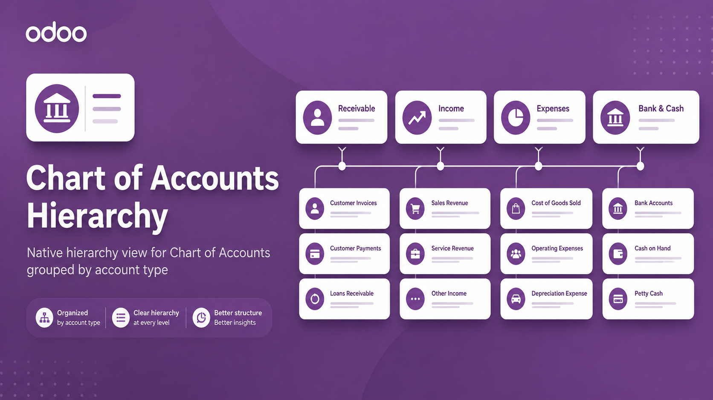
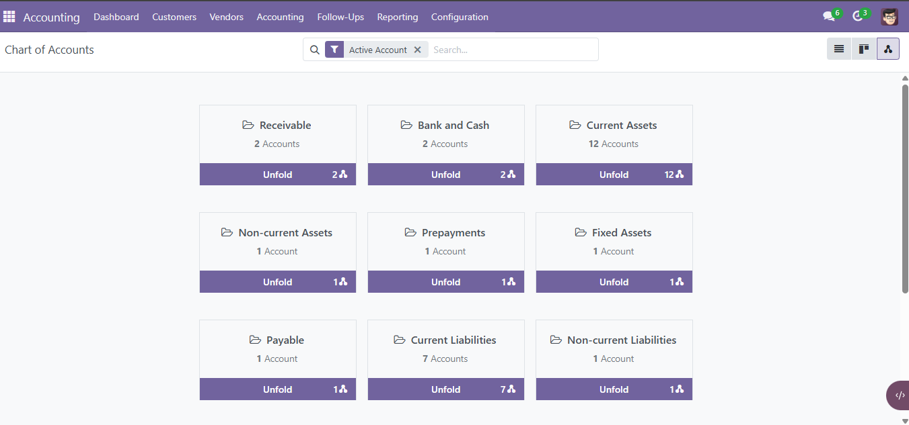
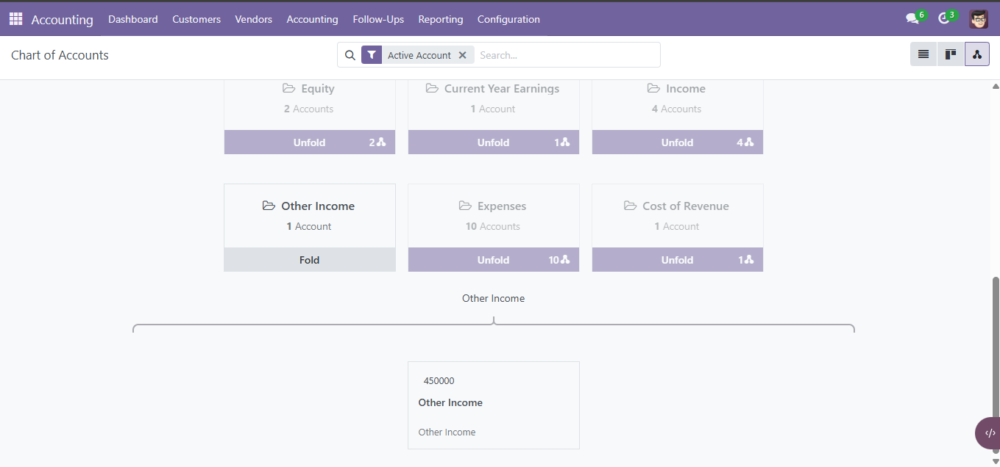
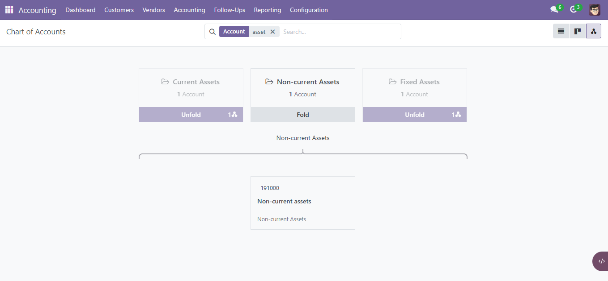
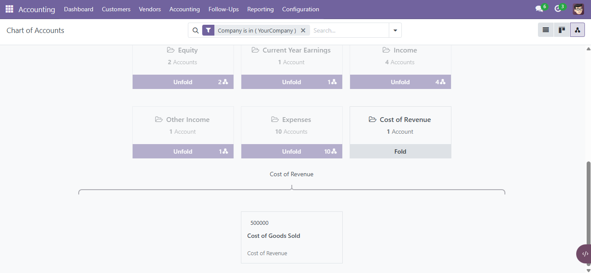

Add an optional hierarchy view to the standard Chart of Accounts and organize accounts visually by account type while preserving Odoo's normal accounting workflow.
A large Chart of Accounts can become difficult to navigate when every account is presented only as a flat list. This module adds a visual hierarchy that groups accounts by their account type, making the structure easier to understand and explore.
The standard Chart of Accounts behavior is preserved. The normal list or tree view remains the default view, and the hierarchy is added as an optional additional view.
Uses Odoo's native hierarchy infrastructure for a familiar and responsive user experience.
Accounts are organized visually under their corresponding account type.
Expand only the account types you need and collapse them again to keep the view clean.
Clicking an account opens the normal Odoo account form without introducing fake accounting records.
The hierarchy follows the current Chart of Accounts domain, including standard searches and filters.
Works with Odoo's normal company context and account visibility rules.
Account visibility follows the behavior of the supported Odoo version and its standard Chart of Accounts filters.
The module adds hierarchy as an extra view without replacing the standard Chart of Accounts views.
Account Type cards are virtual hierarchy nodes used only for visualization. The account cards below them are real account.account records.

View the Chart of Accounts grouped by account type.

Expand an account type to display its real account records.

Standard Chart of Accounts searches and filters are reflected directly in the hierarchy.

Click an account card to open the standard Odoo account form.
The module does not replace the Chart of Accounts action and does not change accounting relationships. It simply adds an additional hierarchy visualization.
Use the corresponding repository branch for your Odoo version.
accountweb_hierarchy
A focused, lightweight extension for easier Chart of Accounts navigation and visualization.
Author: Gadeer Mahmoud
License: LGPL-3.0